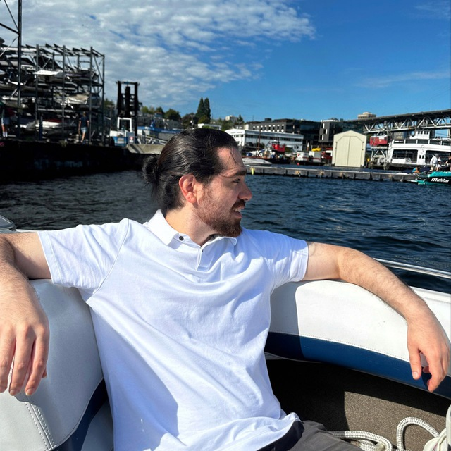

01
Freight and Curb Management
Evaluating loading zones, pricing policies, delivery activity, and spatial mismatch between freight demand and curb supply.
University of Washington · Urban Freight Lab
I am a PhD student in Transportation Engineering at the University of Washington and a researcher at the Urban Freight Lab. My work combines statistical modeling, optimization, simulation, machine learning, computer vision, and geospatial analytics to support safer, more efficient, and more equitable transportation systems.

About
My research focuses on data-driven methods that help agencies, cities, and transportation stakeholders understand complex mobility systems. I am particularly interested in how emerging data sources, connected vehicles, computer vision, natural language processing, optimization, and simulation can be translated into actionable transportation insights.
I have worked across traffic safety, autonomous vehicles, urban freight, electric vehicle infrastructure, pedestrian behavior, transit data analytics, and disaster-related accessibility analysis.
Research Focus
01
Evaluating loading zones, pricing policies, delivery activity, and spatial mismatch between freight demand and curb supply.
02
Using crash records, connected-vehicle trajectories, autonomous vehicle reports, and surrogate safety measures to identify risk patterns.
03
Connecting sensors, simulation, dashboards, and machine learning models to support real-time and planning-oriented decisions.
Selected Projects
Urban Freight · Spatial Analytics
A competition-adjusted accessibility framework for evaluating how commercial vehicle load zones serve urban freight demand across dense city networks.
Traffic Safety · Machine Learning
Analysis of connected-vehicle and sensor-based trajectory data to estimate safety indicators such as TTC, PET, and DRAC at signalized intersections.
Simulation · Edge AI · Decision Support
Integration of sensing, simulation, dashboards, and analytics to support safety and mobility management for smart corridors and intersections.
Optimization · EV Infrastructure
A Python-based system for recommending electric vehicle charging locations using spatial, network, demand, and equity constraints.
Computer Vision · NLP · Safety
Pipelines that extract structured safety insights from unstructured autonomous vehicle crash reports using AI and data mining methods.
Logistics · Data Modeling
Analytical support for large-scale urban freight digitization, curb access evaluation, and last-mile delivery policy analysis.
Publications
My publications span autonomous vehicles, safety modeling, pedestrian behavior, electric vehicle infrastructure, and transportation policy.
Transportation Research Board
Transport Policy
Sustainable Cities and Society
Accident Analysis & Prevention
Sustainability
Methods and Tools
Teaching and Leadership
I support graduate teaching in transportation, logistics, and analytical methods, with emphasis on Python workflows, travel demand modeling, model interpretation, decision-support tools, and clear communication of quantitative results.
I also support Urban Freight Lab operations and research coordination, and have contributed to graduate-level autonomous vehicle course development and applied logistics education.
Contact
Please reach out for research collaborations, project discussions, invited talks, or applied transportation analytics opportunities.
Email Me